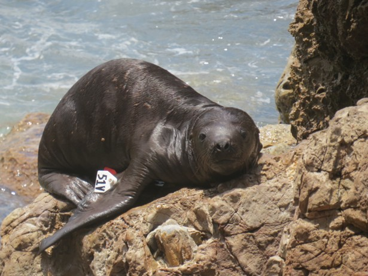
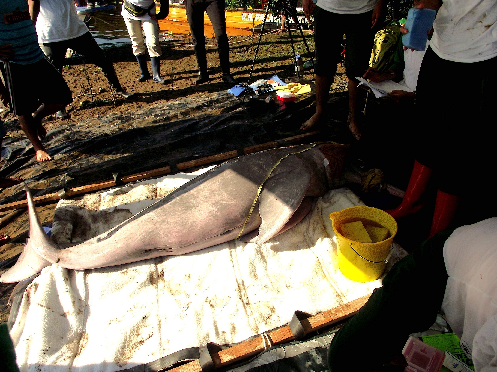
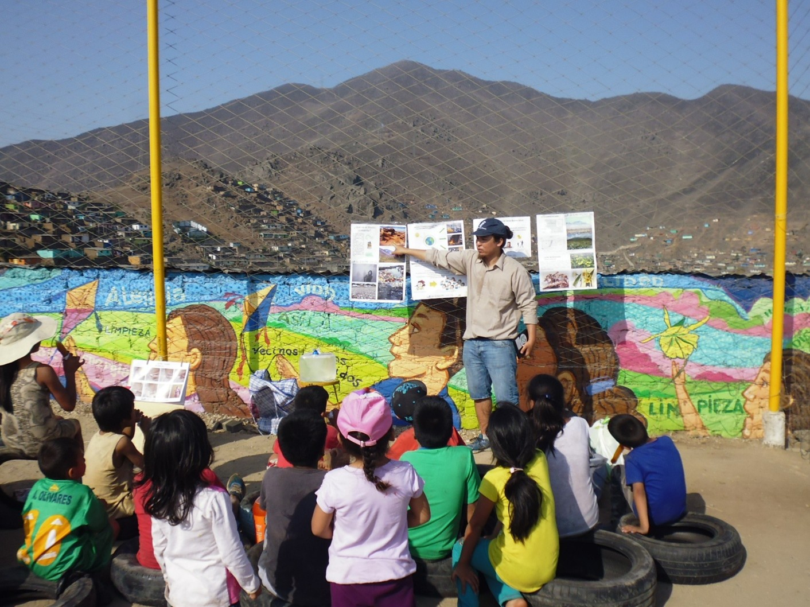

Fernando Nishio
Biólogo de Campo • Proyectos de Conservacion • Proyectos Ambientales
Con experiencia coordinando operaciones de campo, logística y proyectos interdisciplinarios en los ecosistemas costeros, amazónicos y urbanos del Perú.
Conoce más
Biólogo de Campo • Proyectos de Conservacion • Proyectos Ambientales
Con experiencia coordinando operaciones de campo, logística y proyectos interdisciplinarios en los ecosistemas costeros, amazónicos y urbanos del Perú.
Conoce más
Biólogo y especialista en operaciones ambientales de campo con experiencia en investigación de fauna silvestre, gestión del agua, proyectos de conservación y operación de estaciones de investigación en los ecosistemas costeros, amazónicos y urbanos del Perú. Mi trabajo combina logística de campo, monitoreo ambiental, iniciativas comunitarias y resolución de problemas aplicada en condiciones ambientales reales.
Actualmente desarrollo proyectos independientes en la intersección entre conservación, sistemas de agua y tecnología.
Descargar CV
Investigación ecológica y monitoreo de largo plazo de mamíferos marinos, aves marinas y pesquerías artesanales en Punta San Juan, Perú — incluyendo captura de fauna, muestreo, marcaje, monitoreo poblacional y proyectos de conservación relacionados con la pesca sostenible y la protección de áreas de anidación de aves marinas.

Experiencia de campo en las áreas protegidas de Tambopata, Manu y Los Amigos, colaborando en investigación de fauna silvestre, monitoreo de biodiversidad y operaciones de campo en selva tropical. Esto incluyó expediciones exploratorias, logística de campo y proyectos interdisciplinarios en bosques tropicales.

Director de un centro de investigación universitario con operaciones en múltiples sitios de campo, supervisando logística, investigadores, voluntarios internacionales y coordinación institucional. También lideré esfuerzos de recaudación de fondos y la construcción de una estación de investigación en un área natural protegida.

Colaboré en un proyecto de conservación apoyado por WWF que involucró la captura y el marcaje con GPS de delfines de río amazónicos. A partir de experiencia previa manejando lobos marinos sudamericanos, ayudé a capacitar personal de campo y lideré la captura de especímenes, toma de muestras biológicas y la colocación de dispositivos GPS

Trabajé en proyectos de educación ambiental, salud pública y tratamiento de agua en hogares con ONG, instituciones académicas y organizaciones privadas en comunidades periurbanas y rurales alrededor de Lima, incluyendo monitoreo de calidad de agua y programas de capacitación comunitaria.

Diseñé y dirigí programas de educación ambiental y trabajo comunitario enfocados en conservación, cambio climático, salud pública y calidad del agua. Las actividades incluyeron talleres prácticos de ciencia, proyectos de participación comunitaria y programas de capacitación desarrollados con ONG, instituciones académicas y organizaciones privadas.